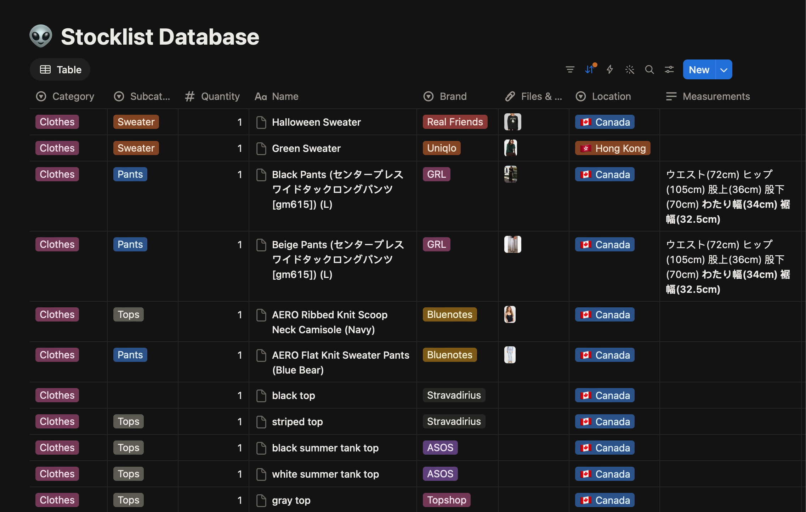
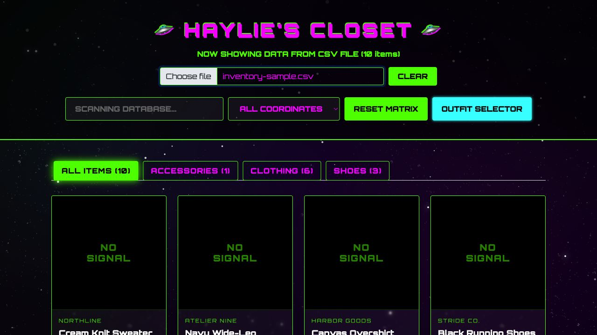

Browse by category
Top-level categories and subcategories make clothing and shoes easier to scan than a single, dense table.
Turning a moving personal database into a searchable, visual system.
I identified a recurring inventory-management problem, then independently designed, built, and iterated a working website in five days. The product turns CSV and Notion data into a clearer workflow for tracking items while moving between locations and selling them.
I needed a practical way to find clothing and shoes, see where an item was stored, and keep a clearer record of what was available or being sold. I built the complete product independently: two days for the first version, followed by three days refining tabs, subcategories, and the details I needed day to day.
The original source was a structured inventory database with categories, subcategories, quantities, brands, locations, and measurements. It held the right information, but made browsing and acting on it slow.

Top-level categories and subcategories make clothing and shoes easier to scan than a single, dense table.
Search and location filters help retrieve an item by name, brand, or where it is currently stored.
The interface accepts a CSV while also supporting a live Notion database, so the source data stays maintainable.
The final website gives me a visual view of inventory records, category tabs, location filters, and a random outfit selector without requiring a new database workflow.

A shipped personal tool that makes it easier to keep track of stock, storage, and sale items from a structured CSV database.